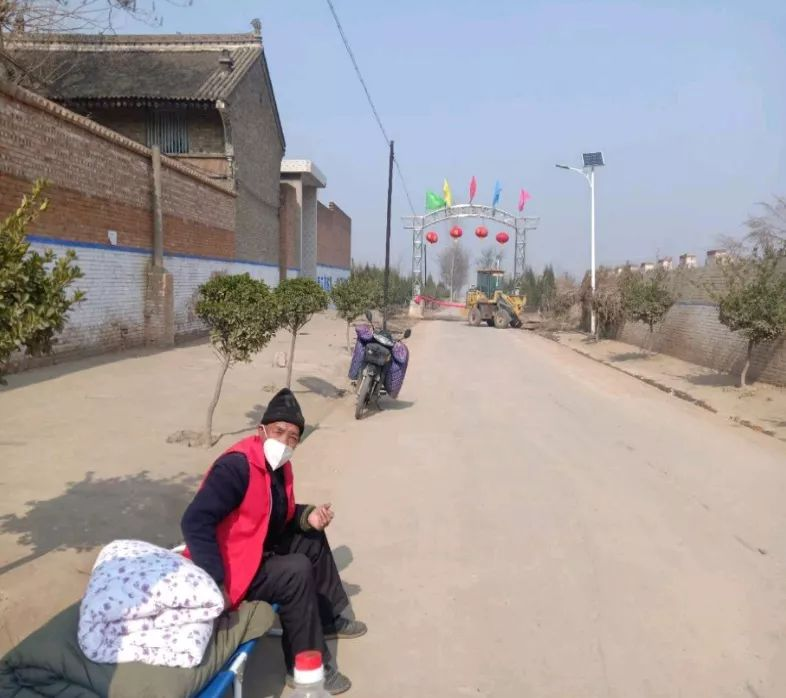
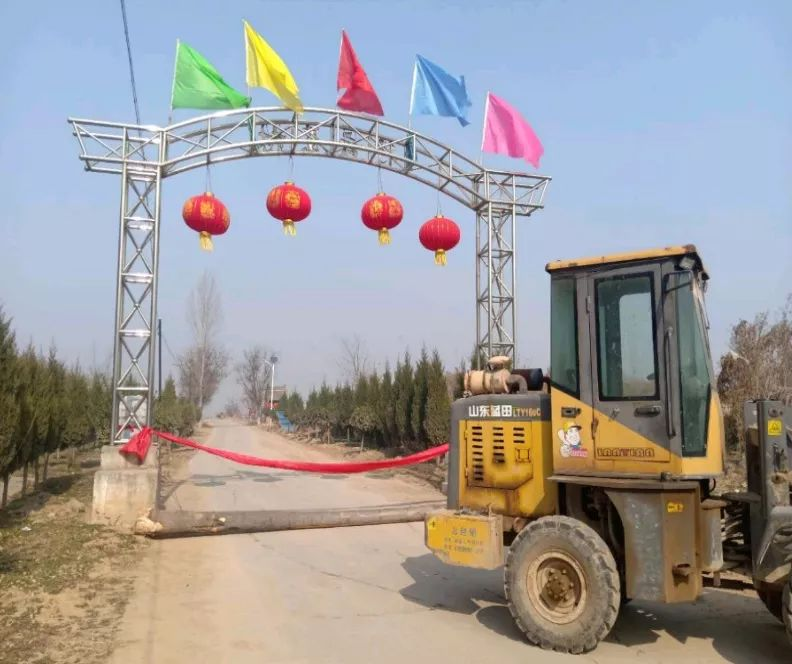

一名重症患者家属的自白
原文链接 备份链接 “ - 疫 情 之 下 - 看到爸爸如此坚强的内心和乐观的心理状态，我也充满了信心。 ” 故 事 练 习 生 习 作 第 58 篇 1月20日晚间，钟南山院士对“新型肺炎人传人”的一句肯定，让全国各地陷入对病毒 …

- 疫 情 之 下 -
正月初七那天，是爸爸所在的工厂高炉熄火的日子。爸爸说，走出工厂时，整个轧钢厂像是一台巨大的发动机，终于停止了转动。
”
1
不知不觉间，疫情已经沸沸扬扬闹了这么久。
一开始听说新冠状病毒时，我还曾对着电视吐槽：“一个肺炎也能闹到人心惶惶，现在科技那么发达，应该不会扩散开吧。”
爸爸也附和说：“厂子里都没通知，我明天还继续上班呢。”
那几天，疫情并没有给一家人带来丝毫的恐慌，每个人按部就班地做自己的事情。妈妈洗衣做饭，爸爸按时上下班，我放假在家，时而拾掇一些零散的家务活。
大伯家的大哥赶在春节前从香港回老家。路上他在微信群里问：咱家里那边没有从武汉回来的吧？我回了一句：没有，你赶紧回老家来，都等着你吃个团圆饭呢。
大哥的到来给家里增添了许多团圆的气氛，妈妈做了一桌子丰盛的年夜饭。除夕夜守完岁，我们一起出去拜年时，视野里尽是村子里起早拜年的人。可能是因为本市还没出现确诊病例，相比起摸不到、看不见的疫情，大家更愿意遵循往年里节日的传统。
直到初一的晚上，一家人吃过晚饭后围在床上看电视，地方电视台里播报的消息让全家人都震惊不已：当日，本市确诊新型肺炎病例8例，其中我们县占了2例。
我爸苦笑着看看我说：“得，这次厉害了，谁也别出去了。 ”
妈妈顿时有些忧心忡忡，因为爸爸在初二这天正好上白班。算起来，这是他春节依旧在工厂里值班的第二个年头——爸爸在县里的轧钢厂上班，工作任务是照看车带，往环冷机里注水，还有就是上下班之前把机器里延漏出来的残渣打扫干净。
我知道妈妈在担心什么。
爸爸的工厂很大，同时包揽着生铁、钢坯、线材等产品的生产销售，有将近四千名工人。疫情突然这么紧张，万一上班时就有哪个工人和刚刚确诊的病例接触过呢？
但一晚上也没有等来工厂停工的通知，一家人的眉头都不再像平日里那么舒展，年味儿也被冲淡了不少。
妈妈拿起手机来说：“要不，给领导打个电话问问？”
我爸制止了她，“这么晚了，别打扰人家了，明天再看看吧。”
2
带着一丝不安的感受，爸爸第二天起早，依旧去了工厂上班。与此同时，村子里下了封村令，不允许外来车辆出入，停止一切“外交”活动，连去邻居家串门也被禁止。
离我们家几百米外的村委会大喇叭，村支书开始不断地传递政策，告知村民们疫情迅速扩散开来，一定要提起注意。


可形势越严峻，我脑子里越重复出现一个念头：爸爸还在工厂上班！还在危险地区穿梭着！
一整天我都坐在家里，看看窗外，是和往日一样平常的天。但我的心里总是在不住地打鼓，说不清是害怕还是恐慌。灰蒙蒙的天空下，似乎笼罩着一些让人生畏的东西。
终于捱到了晚上。爸爸下班回家，妈妈让爸爸立在门口，递给他一个掸灰的小扫帚，让他把身上的灰尘扫一扫再进门。电视上说，病毒除了可以通过飞沫传染，还会粘在衣服上。
“明天还去吗？”妈妈问。
“没说。”爸爸边扫着身上的灰，边面色凝重地答道。
按照爸爸工厂昼夜交替的排班规律，前一天上的白班，第二天就是夜班。工厂不停工，意味着爸爸明天晚上还要去那个工人大量聚集的车间，既承担着接触潜在感染者的风险，又让家里的我们娘俩跟着担心。
爸爸说：“今天上班回来就已经有好几个村子封路了，回家都不让过，好说歹说才放了行。”
吃完晚饭后，一家人再坐在一起看电视，新闻里全国的确诊病例已经出现了成千人数的上升。爸爸皱了皱眉，看着他手机工作群里寂静的消息窗口，念叨着：“明天晚上还去不去啊……”
初三一早上，我都拿着爸爸的手机，时时刻刻关注着他工作群的消息。我想中午十二点之前，工厂怎么着也该有个通知吧。工厂那么多人，不回家的还要在食堂里吃饭，到时候各个车间的工人又会聚集成更大的人群，万一谁被感染了怎么办？
一直到中午十二点，我看着工作群那些零零散散的员工吐槽消息，心里的不安又多了几分，看样子，工厂是不打算停工了。
这时爸爸的手机响起来，是一个和爸爸同一个车间的工友打来的。我以为停工通知来了，兴奋地摁下了接听键，但很快，我的心情就又坠到了谷底。电话那头传来的，是和我们家同样的担忧。
“海哥，工厂不停工不说，连个防护措施也没有，这怎么行？”
那个叔叔说，他是白班，刚刚在工厂里吃完中午饭。开饭的时候，食堂里被蜂拥而至的工人们挤得满满当当，更让人心慌的是，很多工人边吃饭边聊天，唾液横飞。他突然有点害怕，谁知道这么多人里面有没有潜伏病例呢？也许哪个唾沫星子里就携带着病毒。
我之前去过爸爸工厂的食堂，里面很宽阔，看上去像是一个摆满了桌椅的巨大车间。食堂里六人一桌，一排三凳，工人们喜欢对着面聊天吃饭。我想象了一下千人一起吃饭的壮观场景，再联想起无形的新型冠状病毒，不禁起了一身鸡皮疙瘩。
听完叔叔的抱怨，爸爸苦笑着回应了他几句，劝他别害怕，“兴许下午工厂就停工了呢？”
放下电话后，爸爸叹了一口气。我心想，他还劝别人呢，自己心里都没底！
异常煎熬的一下午。
爸爸六点就要出发去上班，我再也没有办法安心等消息。下定决心后，我偷偷用爸爸的微信在工作群里艾特了一下领班，说疫情期间工厂不安全，一旦有哪怕一名确诊患者，整个工厂就会爆发聚集性疫情，那是四千人的生命安全，应该赶紧停工。
不知道是我直接艾特他的行为冒犯到了他，还是我说的话有些过了。领班很快回复了我，说工厂已经在商讨这件事了，让我等通知。还提醒“爸爸”，说不要在群里发那些危言耸听的话。
放下手机，我陷入了沉默。如果放在平常，我绝对不会再多说一句话，全听工厂安排，可是现在是特殊时期，我真的怕爸爸被感染。
爸爸是在2016年因为腿疾失业的，在那之后，他一直在县城里摆摊给人钉鞋板、补车带，收入很不稳定，一家人过得很拮据。也是在那一年，爷爷因为不小心摔下楼梯，抢救无效去世。
由于坏事情来得太频繁，从那时开始，我就对家庭里每个成员的健康问题极其敏感。
之后，拖着久久没有治疗的腿打了一年零工，爸爸才在同村一个叔叔的介绍下，到了现在的钢铁厂上班，一个月拿两千七百多元的工资。
三口之家里，我还在上大学，妈妈是家庭妇女，所以，爸爸成了家里唯一的经济来源。他是家里的顶梁柱，要是出了什么问题，我们这个三口之家，就跟着倒了！
看着新闻里不断更新的感染者数据，我下定决心，就算是把爸爸的工厂举报了，我也要保证爸爸的安全，或者说，爸爸和其他工友的安全。
3
第二天一起早，我和闺蜜说了关于爸爸工厂的事情。闺蜜告诉我，如果真的迫不得已要举报，可以去网上找工商管理局的电话号码。
果不其然，我到网上找到当地疫情举报线索的窗口，很快就看到了工商管理局的电话号码。我把号码记下来放在手边，心想如果工厂再不做出决定，我就以不顾员工生命安全，疫情时期违规生产为由，举报他们！
这边爸爸已经下了夜班，我说要举报工厂，他说觉得不太好，不太想让我这么做。
可他哪拗得过我，趁着他补觉时，我拿走了他的手机，再次打开工作群的聊天框，在群里一字一句提出自己的诉求：我是李长海的女儿，我请求工厂停工，等疫情过去再继续生产。作为一名员工家属，我要对我的亲人负责，只要能马上停工，你让他下岗回家继续摆地摊都行。
我只希望他能够平安。
一大段文字发出去之后，收到工作群许许多多叔叔阿姨的点赞，大家都说我是爸爸的小棉袄，父女连心。我一时有些动容，可那些都不是我想要的回复。我期待了很久，工厂的管理层还是迟迟没有发言。
我看着管理局的举报电话，紧紧握着爸爸的手机，嘴里不住说着：“如果领导再不回复消息，我就打电话举报你们。”
几个小时后，爸爸醒来看到群里的消息，有点拿我没办法，不禁笑话我说：“谁会理会你这个小丫头。”
我盯着那个陌生的电话号码没说话。我知道自己人微言轻，可我除了打举报电话，真的再也没有其他办法。
为了不错过群里的消息，我时刻拿着我爸的手机。快下午两点的时候，群里终于发了一份艾特所有人的通知文件，我赶紧打开，是一份承诺书。
里面说在疫情刚刚开始扩散时，工厂高层已经开会决定尽快停工，但轧钢厂停工不像拉电闸那么快，因为高炉还在上班，工厂还承担着工业余能供热和火力发电的任务，哪怕停产也需要几天的缓冲期，所以工厂里一直在协调各方面的事务。
工厂承诺会在停产前保证每一个在职员工的安全。厂子里已经和市、县两级的疾控中心取得联系，上下班在工厂门口会有人专门测体温，配发专用的N95防病毒口罩，并且，工厂的食堂不再允许聚餐，车间里每天定时消毒，请亲人家属们放心。
一份承诺书，没有多少字，但对我来说，已经足够使人安心。我知道，这些字的背后，不仅是工厂担负起的责任，更是工作群里四十多个工人身后的家属们担忧的目光。
排除疑似患者的消息截图
有了工厂的承诺后，爸爸告诉我说，工厂对每一项检查都认真负责，但凡有发现头疼脑热的人，立刻就送到定点医院接受检查。
好在，在停工之前，工厂里没有一个病例出现。
4
那几天，爸爸每天骑摩托车去上下班，因为路途遥远，车程大概需要一个小时，路上要经过好几个村子的体温测量和身份排查。
为了让爸爸尽量少在外面接触空气和人群，妈妈让爸爸每天戴两层口罩，然后再带好帽子、手套，把全身裹得严严实实地才让他出门。
通常他下班回到家，没等我和妈妈问他，就自己报上来一句“体温正常，本地人”。我和妈妈有时会被他逗笑，但随即又补充上一句：“咱们家可不能掉以轻心啊。”
是啊，虽然工厂做出了承诺，实施了相应的防疫措施。但作为一个员工子女，我无时无刻不在担心着在劝返点和人群中穿行的父亲。
朋友知道我的担心后安慰我：“在这个特殊的时期，总要有人做出牺牲。除了在武汉一线和新型冠状病毒做抗争的医生、护士、军人、警察、志愿者，还有许许多多像你爸爸一样依然在工作岗位上忙碌的工人。你应该理解你爸爸，也要理解工厂做出的决定，一旦所有工人都立刻停工，这个世界，就真的乱了。”
初五那天，爸爸上班回来告诉我，工作群里的员工集体罢工，理由很正当：村子都封死了，出不去。领班在和管理层反映情况后，管理层要求统计严禁外出的村子的数量，尽可能多的让员工们坚守到最后一刻。
统计好数据后，工厂安排人一个村子一个村子的做思想工作，告诉劝返点的党员和干部，公司可以开出证明，确保外出员工返村时绝对安全。而且，工厂之前用来出租的房间，现在也都腾出来，让下班后不愿回家的工人免费入住，减少他们来去路途上的接触风险。
一波又一波的员工离开了工厂，去家里休假待命。因为谁也不知道疫情会闹到什么时候，所有人只能安心待在家里，哪也不去。我想，这就是我们普通人所能为抗疫事业做的最大贡献。
我待在家里没什么事情，抽空跟着妈妈学了好几个新菜。每当爸爸下班时，都会发现桌子上多了一道我亲手炒的菜，夹到嘴里尝尝，总是不住地说着好吃。
正月初七那天，是爸爸所在的工厂高炉熄火的日子。爸爸说，走出工厂时，整个轧钢厂像是一台巨大的发动机，终于停止了转动。
我听到后很开心。因为爸爸作为最后一批坚守在工厂的工人，终于可以回家过个好年了。
（文中父亲为化名）
-END-
作者 | 故里长安，青年作者。
题图|《阳光普照》剧照
华中科技大学出版社·武汉战“疫”数博馆
抗击新型冠状病毒感染肺炎疫情作品资料正在征集中——
【征集要求】
＊来稿应为未公开发表和出版的内容，题材不限，
VLOG、文字、图片等均可，务必客观真实，
反映疫情当下的民生现况及个人见闻；
＊提供作品者都将获得华中科技大学出版社提供的“宅家悦读大礼包”；
＊作品一旦录用，将提供完整规范的版权保护。
【投稿方式】
音视频：2279281426@qq.com
文字：423322329@qq.com
图片：454578039@qq.com
或点击下方链接直接投稿
http://2019ncov.xiushewang.com/
请务必留下真实姓名及详细联系方式。
“我故”故事练习生培养计划，详情请戳：

About us
主编：鹿｜本期编辑：鹿
Contact us
投稿/商务合作/咨询
微信后台留言 or 邮箱：wmsygsdr@163.com
**我们是有故事的人｜华中科技大学出版社官方故事平台**
原文链接 备份链接 “ - 疫 情 之 下 - 看到爸爸如此坚强的内心和乐观的心理状态，我也充满了信心。 ” 故 事 练 习 生 习 作 第 58 篇 1月20日晚间，钟南山院士对“新型肺炎人传人”的一句肯定，让全国各地陷入对病毒 …
原文链接 备份链接 澎湃新闻记者 李文姬 曹宇泽给“抗疫”一线的爸爸写信 本文图均为 受访者供图 曹宇泽今年11岁，是名小学六年级的学生。他的爸爸曹志刚是三峡大学附属仁和医院急诊重症医学科主任。 疫情来袭，曹志刚第一批报了名，成为医院专家 …
原文链接 备份链接 一些医护人员和他们子女的故事。 文 | 林少娟 编辑 | 沈小山 他们是驰援湖北的医护人员： 2月7日中午，中山大学附属第一医院举行驰援武汉医疗总队成立出发仪式，再派131名精兵强将组成“特战队”驰援武汉，医疗队将支 …
原文链接 备份链接 以下文章来源于我是南七道 ，作者南七道 疫情，让老蔡这样的小微型企业措手不及。而开工之路，更是遥不可及 *******文｜ 南七道******* 广东随处可见的小工厂（南七道2019年摄） 受疫情影响，最近包括 …
原文链接 备份链接 一些防疫措施影响到部分零部件加工生产，部分跨国公司订单中断。供应链较长且分工复杂的汽车和电子制造行业，压力更加明显。但此次疫情并不会对供应链产生可以衡量的长期影响。中国花30年打造的供应链， …